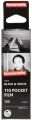

这是一款110格式底片，有着小巧便于携带的特性，可轻松放置于口袋，并维持着影像的高品质，即使是短距拍摄也能保持其优异表现。这款黑白底片包含了不可预期的漏光现象，这个有趣的现象，将会在每卷的最后4张出现，创造出更多意想不到的原创影像。
就胶卷业来说，LOMOGRAPHY能够复活一种底片格式，其举止十分可嘉。
解析度很不错，颗粒很小，层次也不错，作为16mm底片，其性能已经超出了我的预期，放大到六寸照片颗粒也不会太明显。
太贵，造成整体性价比并不高。Lomo的产品几乎都如此。